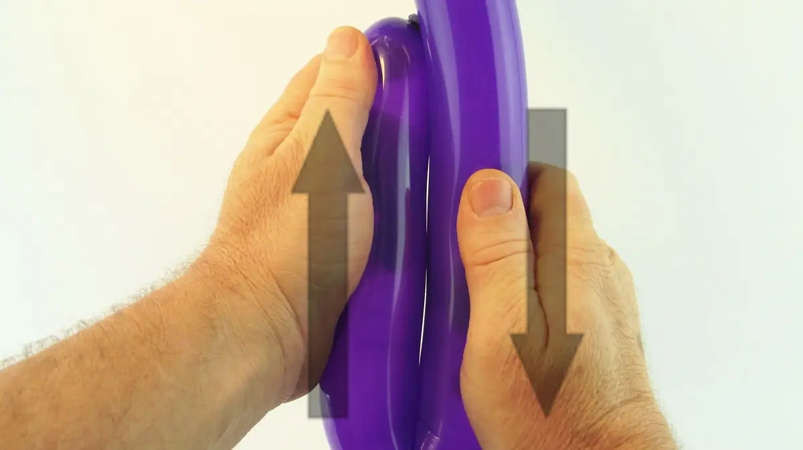
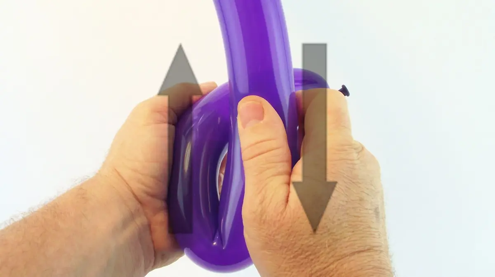
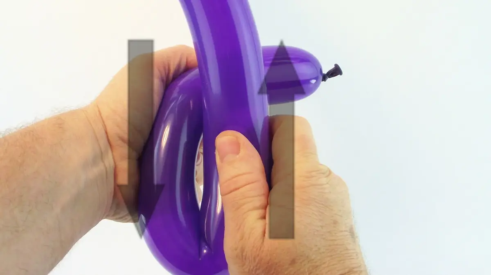
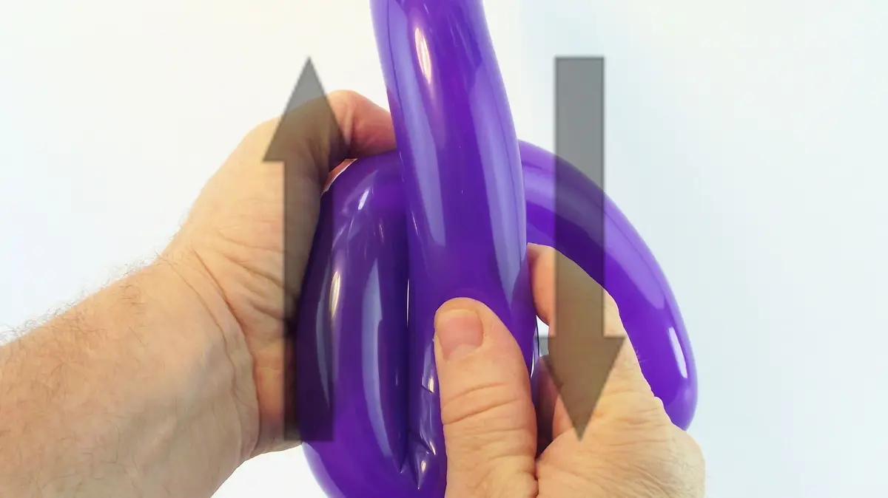
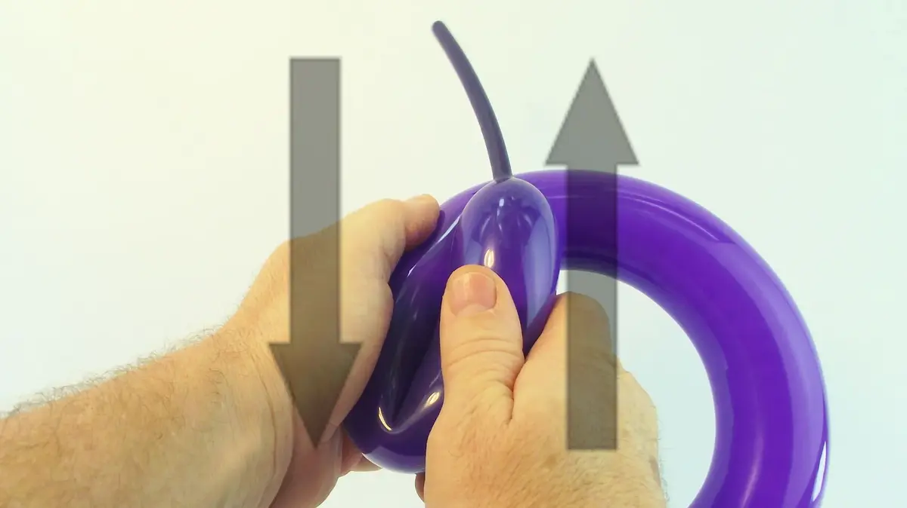
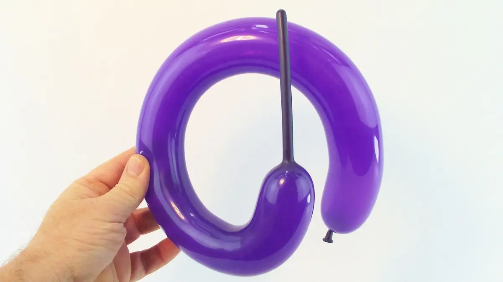
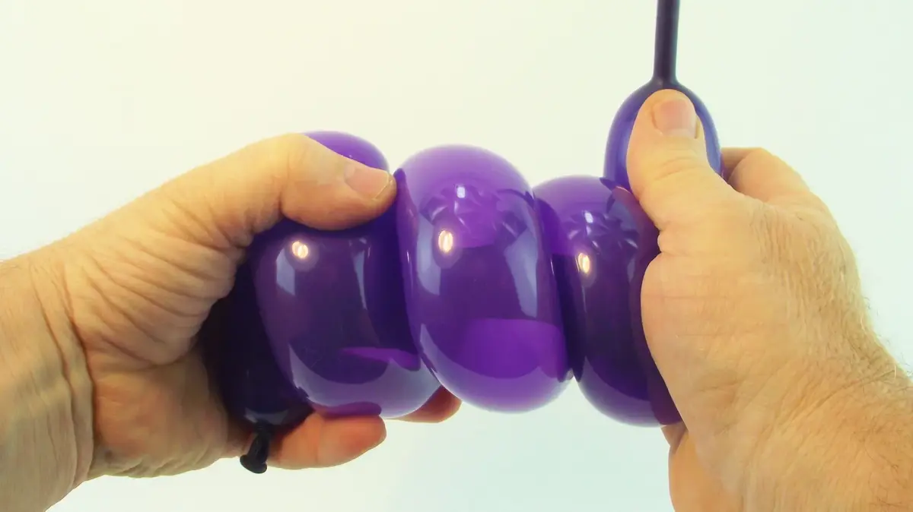
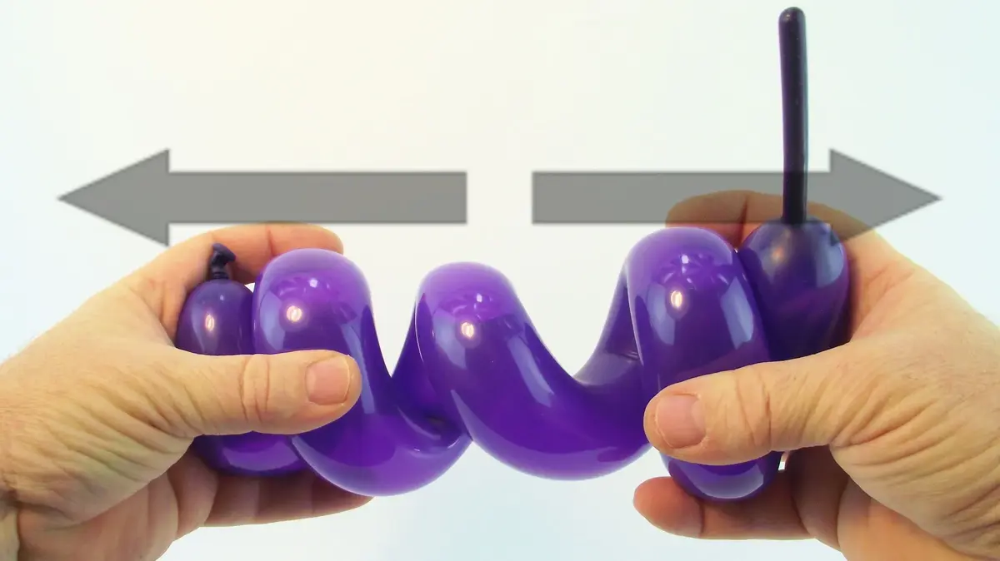

Veamos cómo dar una forma redonda a un segmento de globo.
Es una técnica importante porque permite de mejorar los pequeños detalles de las figuras que aumentan de tal forma su realismo y su naturaleza.
Por ejemplo, os permitirá de reproducir la forma redondeada de la pequeña barriga de un perrito, de un osito o de un pinguino, o incluso la curva de un tallo de flor, o de una lama de espada, etc...
Para profundizar, también vamos a ver como hacer una espiral muy sencillamente (otras técnicas existen pero las abordaremos más tarde porque son un poco más complejas).
Los globos en forma de espiral pueden ser utilizados para formar el cuerpo de un serpiente, ¡o incluso un muelle de suspensión de un motor!
1- Coger un globo a manos llenas y doblarlo, a proximidad del nudo.2- Frotar los dos segmentos el uno contra el otro de manera a mover el doblez del globo, de arriba abajo, 3- y de abajo arriba, varias veces.4- Seguir este movimiento de vaivén mientras avanzando el globo y, por tanto el doblez donde se realiza la fricción, entre las dos manos. 5- Poco a poco el nudo del globo se aleja de la mano de mantenimiento.6- La idea es de pasar el segmento entero de globo inflado por este movimiento de fricción de las dos manos,7- hasta que el final del rabo no inflado del globo llega a la mano de manipulación.8- De esta forma podemos obtener un circulo casi perfecto. 9- Para obtener una espiral, el movimiento es casi idéntico, excepto que no debemos liberar la parte del globo que pasa entre este movimiento de manos.10- Debemos guardarla comprimido en forma de espiral a medida que trabajamos en toda la longitud del globo.11- Si es demasiado difícil de guardar la espiral comprimida con su sola mano de mantenimiento, podemos ayudarnos de otra parte del cuerpo (como en el vídeo).12- Una vez que toda la longitud del globo esta comprimida en forma de espiral, mantener bien cada extremidad de la espiral en cada mano,13- y alejar poco a poco las dos extremidades lo más lejos posible una de la otra, luego liberar el agarre con el mismo cuidado.Una vez liberado, el globo conserva su forma en espiral. ¡Hasta pronto, para otra lección... con Môssieur Ballon!